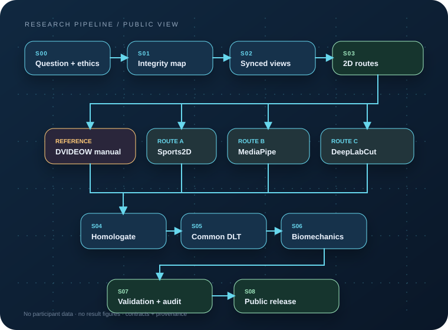

PUBLIC RESEARCH COMPANION · v0.1.0
Del video al análisis biomecánico, con cada decisión a la vista.
Una guía visual e interactiva de la tesis sobre análisis markerless del pateo en futsal: referencia manual DVIDEOW, Sports2D, MediaPipe, DeepLabCut, reconstrucción DLT y validación.

2D → 3Dfunnel común
4 rutasmanual + markerless
240 Hzcontexto experimental
0 datosparticipantes no publicados
01 · EXPLORER
El pipeline, etapa por etapa.
Selecciona una tarjeta. Aquí se explica el método; los datos y resultados permanecen fuera.
02 · RELEASE DESIGN
Lo público termina antes de la observación humana.
El repositorio comparte contratos y criterio, no la base que los alimenta.
Sí entra
- Pipeline completo y decisiones metodológicas
- Manifiesto sintético y validadores ejecutables
- Diagramas de proceso, colaboradores y fuentes públicas
- DOI asignado y certificado de presentación
No entra
- Base de datos, videos, coordenadas y calibraciones
- Software ejecutable, pesos, snapshots y cachés
- Tablas, gráficos o imágenes de resultados
- Proof de revista y documento de tesis
03 · EVIDENCE
La historia tiene rastro.
El trabajo preliminar internacional se identifica con un DOI asignado, marcado aquí como en producción. El certificado oral de ISBS 2026 se conserva como evidencia documental; el proof no se publica.
ISBS
2026 ORAL
PRESENTATION
2026 ORAL
PRESENTATION